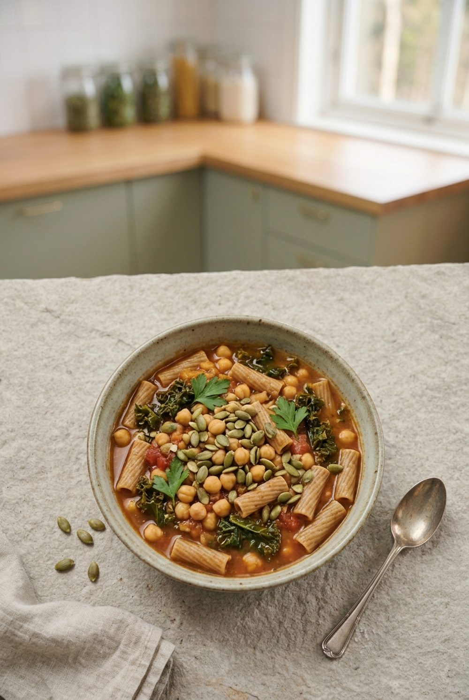

Hauptgericht · vegan
Grünkohl-Eintopf mit Kichererbsen und Vollkornnudeln
Grünkohl ohne Pinkel und ohne stundenlanges Kochen – herzhaft, rauchig und in 30 Minuten fertig.

Nährwerte pro Portion
Eiweiß22 g
Ballaststoffe23 g
Eisen5,0 mg
Folat248 µg
Zutaten für 3 Portionen
- 250 g Grünkohl (frisch oder TK)
- 1 Dose Kichererbsen (240 g abgetropft)
- 120 g Vollkornnudeln (kleine Sorte)
- 1 Zwiebel
- 2 Knoblauchzehen
- 1 Karotte
- 1 EL Olivenöl
- 1 Dose stückige Tomaten (400 g)
- 700 ml Gemüsebrühe
- 1 TL geräuchertes Paprikapulver
- 3 EL Kürbiskerne
- Salz, Pfeffer
Enthält: Sellerie, Gluten. Nährwerte berechnet mit dem Bundeslebensmittelschlüssel (BLS 4.0), 448 kcal · 51 g Kohlenhydrate · 12 g Fett pro Portion.
Zubereitung
- Zwiebel, Knoblauch und Karotte würfeln. Grünkohl von den Stielen zupfen und klein schneiden.
- Öl erhitzen, Zwiebel, Knoblauch und Karotte 3 Minuten anschwitzen. Paprikapulver kurz mitrösten, Tomaten und Brühe zugeben.
- Grünkohl, Kichererbsen und Nudeln zugeben und 10–12 Minuten köcheln, bis die Nudeln gar sind.
- Abschmecken. Kürbiskerne ohne Fett rösten und darüberstreuen.
Mit TK-Grünkohl geht es noch schneller.
Mehr aus der App
Dieses Rezept stammt aus der WellANNI-App (Foto KI-generiert). Dort findest du über 200 geprüfte Rezepte, planst deine Woche für den ganzen Haushalt samt Einkaufsliste und siehst, was dein Teller schon geliefert hat.
WellANNI App holenPassende Kollektion: Zyklus Phasen & PMS